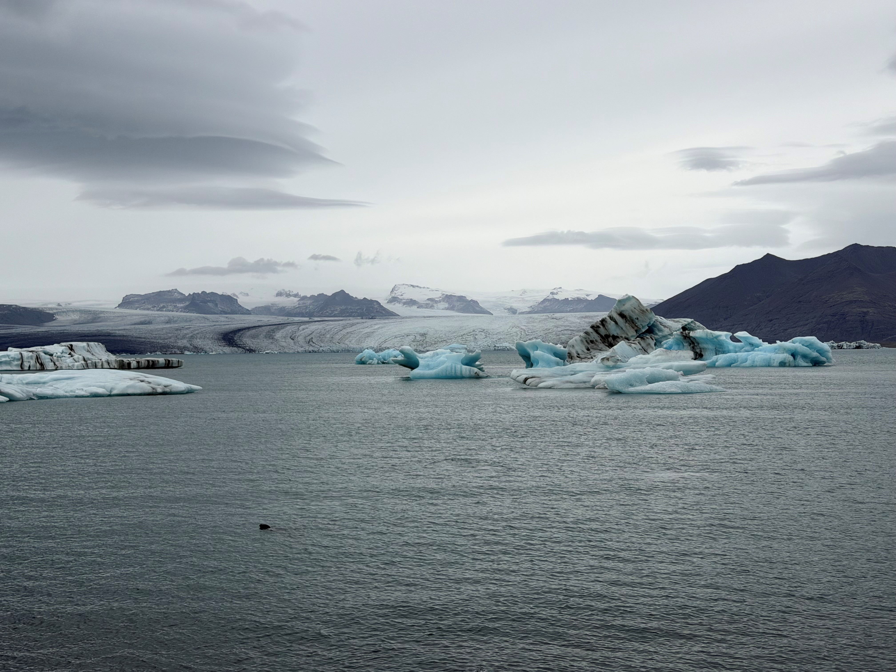
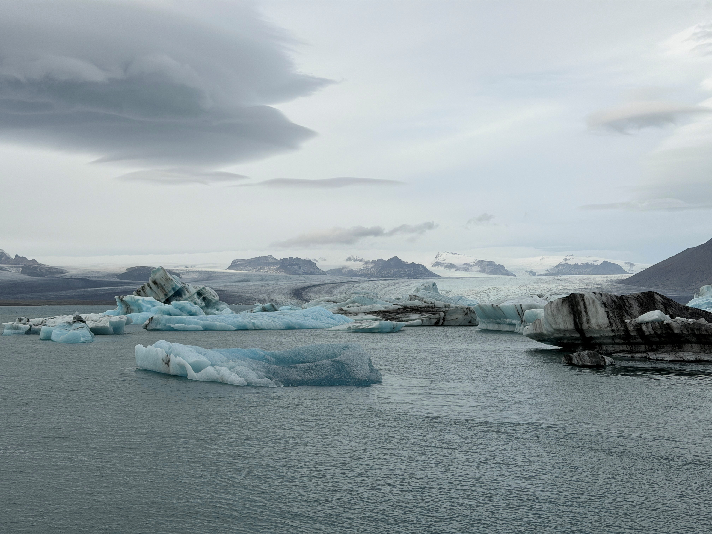

Silent Giants
JÖKULSÁRLÓN · ICELAND
En el sureste de Islandia se extiende un paisaje que parece pertenecer a otro mundo. Aquí, gigantescos icebergs derivan en silencio por una laguna glaciar mientras las focas nadan entre ellos, desapareciendo bajo unas aguas cuya temperatura apenas supera el punto de congelación.
Jökulsárlón es un lugar donde conviven fuerzas aparentemente opuestas. Hielo milenario sobrevive a escasos kilómetros de una de las regiones con mayor actividad volcánica del planeta, dando forma a un entorno modelado por igual por el fuego y el hielo.
Para los fotógrafos es un sueño hecho realidad. Para los amantes de la naturaleza, un recordatorio de la extraordinaria belleza y complejidad de nuestro planeta. Cada iceberg encierra una historia forjada a lo largo de siglos, mientras que cada foca representa la capacidad de la vida para prosperar en uno de los entornos más extremos de la Tierra.

Jökulsárlón se alimenta de las aguas procedentes del Breiðamerkurjökull, un glaciar de descarga conectado al Vatnajökull, la mayor masa de hielo de Europa. El hielo que hoy flota en la laguna pudo haber iniciado su viaje hace cientos de años en forma de nieve caída sobre las tierras altas de Islandia.
Con el paso del tiempo, capa tras capa de nieve quedó comprimida hasta transformarse en hielo glaciar de gran densidad. Bajo su propio peso, las burbujas de aire fueron expulsadas gradualmente, dando origen a los profundos tonos azules que hacen tan característicos a muchos de los icebergs islandeses.
Cada iceberg que navega por la laguna formó parte en otro tiempo del propio glaciar. Su lento desplazamiento hacia el océano representa el último capítulo de un ciclo que pudo comenzar siglos atrás.
Algunos de los bloques de hielo que hoy flotan en Jökulsárlón son más antiguos que muchos países modernos. La nieve que cayó hace cientos de años terminó convirtiéndose en los icebergs que ahora avanzan serenamente por la laguna.
La paradoja del fuego y el hielo
Pocos lugares del planeta muestran contrastes tan extraordinarios como Islandia. Bajo muchos de sus glaciares se esconde una intensa actividad geotérmica y volcánica.
Islandia se asienta sobre la dorsal mesoatlántica, una gigantesca fractura donde las placas tectónicas se separan lentamente. Desde las profundidades de la Tierra asciende magma que alimenta volcanes, campos de lava y paisajes geotérmicos.
Y, sin embargo, pese a esta constante actividad geológica, enormes glaciares siguen dominando amplias regiones del país. El resultado es un territorio donde el fuego y el hielo conviven en un delicado equilibrio que apenas encuentra comparación en ningún otro lugar del mundo.
Algunos volcanes islandeses permanecen ocultos bajo los glaciares. Durante una erupción, el calor volcánico puede fundir enormes cantidades de hielo en cuestión de horas, generando inundaciones catastróficas conocidas como jökulhlaups.
Esta combinación única de volcanes activos y gigantescas masas de hielo dio origen al sobrenombre más famoso de Islandia: la Tierra de Fuego y Hielo.
{kind=link}

La verdadera escala de Jökulsárlón resulta difícil de capturar en una sola fotografía. Observar el silencioso movimiento de los icebergs sobre la laguna ofrece una experiencia mucho más inmersiva.
Vida entre el hielo
Aunque la laguna pueda parecer un entorno inhóspito y hostil, alberga una sorprendente abundancia de vida. Los peces prosperan en sus frías aguas, atrayendo aves marinas y a uno de los mamíferos más emblemáticos de Islandia: la foca.
Las focas comunes y las focas grises se observan con frecuencia nadando entre los icebergs, emergiendo brevemente a la superficie antes de desaparecer de nuevo bajo el agua.
Su presencia transforma la laguna de un espectacular paisaje glaciar en un ecosistema vibrante y lleno de vida.
La temperatura del agua permanece cerca del punto de congelación durante gran parte del año. Para un ser humano, una exposición prolongada provocaría rápidamente hipotermia. Para las focas, sin embargo, estas condiciones representan un entorno ideal.
La vida secreta de las focas islandesas
Las focas están extraordinariamente adaptadas a la vida en las aguas árticas y subárticas. Bajo su piel poseen una gruesa capa de grasa que actúa como aislante frente a temperaturas cercanas a la congelación.
Pocas personas saben que los bigotes de una foca se encuentran entre los órganos sensoriales más sofisticados del reino animal. Estos pelos especializados son capaces de detectar mínimas perturbaciones en el agua, permitiéndoles seguir el rastro de los peces incluso cuando la visibilidad es muy reducida.
Sus ojos están especialmente adaptados para la visión submarina, lo que les permite cazar con gran eficacia bajo la superficie.
Cuando se sumergen, las focas pueden reducir drásticamente su ritmo cardíaco, conservando oxígeno y permaneciendo bajo el agua durante mucho más tiempo del que cualquier ser humano podría lograr.
Aún más sorprendente es su capacidad para cerrar completamente las fosas nasales durante las inmersiones y abrirlas automáticamente al regresar a la superficie para respirar.
Algunas focas duermen flotando sobre el océano. Otras descansan bajo la superficie, ascendiendo de forma automática para respirar antes de volver a sumirse en el sueño.
Su organismo contiene tanta grasa aislante que las aguas heladas de Jökulsárlón apenas representan un desafío. De hecho, están mucho mejor adaptadas a estas condiciones que la mayoría de sus posibles depredadores.
{kind=link}

Uno de los grandes atractivos de visitar Jökulsárlón es observar a las focas en su hábitat natural. Perfectamente adaptadas a las frías aguas del Atlántico Norte, se desplazan con absoluta facilidad por un entorno que para los seres humanos parece casi incompatible con la vida.
Un paisaje en constante movimiento
A diferencia de las montañas o los bosques, Jökulsárlón nunca permanece completamente inmóvil. Los icebergs derivan, giran y se funden de forma continua mientras atraviesan la laguna.
Algunos sobreviven apenas unas semanas. Otros permanecen durante años antes de alcanzar finalmente el océano Atlántico.
Muchos continúan su viaje hacia la famosa Diamond Beach, donde fragmentos de hielo glaciar son arrastrados hasta una playa de arena volcánica negra, creando uno de los paisajes más icónicos de Islandia.
La propia laguna continúa creciendo a medida que el glaciar retrocede, recordándonos que incluso los paisajes más antiguos permanecen en constante transformación.
Los icebergs cambian de forma continuamente. Una formación fotografiada por la mañana puede presentar un aspecto completamente distinto al atardecer tras haber girado, fracturado o sufrido un proceso parcial de fusión.
Muchos de los icebergs de azul más intenso contienen una cantidad mínima de aire atrapado en su interior. Su color es el resultado de siglos de compresión, un proceso que permite al hielo absorber y dispersar la luz de una manera única.
Gigantes silenciosos
Contemplar Jökulsárlón desde la orilla hace imposible no sentirse pequeño ante la escala del paisaje.
Los icebergs avanzan en silencio por la laguna. Las focas emergen entre ellos antes de desaparecer de nuevo bajo el agua. Al fondo, el glaciar avanza y retrocede lentamente en un ciclo interminable modelado por el tiempo.
Lo que convierte este lugar en algo extraordinario no es únicamente el hielo, la fauna o el paisaje. Es la convergencia de los tres.
Pocos rincones del planeta reúnen fuerzas naturales tan poderosas en un mismo escenario. Glaciares ancestrales, paisajes volcánicos y una rica vida marina conviven aquí en una armonía asombrosa.
Jökulsárlón nos recuerda que las mayores maravillas de la naturaleza suelen ser también las más silenciosas. Los gigantes de este lugar no rugen ni se imponen. Simplemente avanzan sobre el agua, transportando en su interior siglos de historia.
Ficha fotográfica
Ubicación: Laguna glaciar de Jökulsárlón, Islandia
Región: Parque Nacional Vatnajökull
Glaciar: Breiðamerkurjökull
Fauna observada: Focas comunes y focas grises
Categoría: Fotografía de paisaje y naturaleza
Temática: Glaciares, icebergs y vida marina
Fotógrafo: Carles Torres